JuliaXSPEC.jl
Write XSPEC spectral models in Julia.
JuliaXSPEC lets XSPEC call Julia. A model is an ordinary Julia function; JuliaXSPEC generates the model.dat and C glue that XSPEC needs, compiles your models together with the Julia runtime into a shared library, and forwards every XSPEC call to the right Julia function. Two building blocks support expensive models:
GridInterpolatorcaches a slow function on a parameter grid and interpolates between the grid points — an XSPEC table model that is filled in on demand, with each axis interpolated in linear or logarithmic coordinates as its spacing demands.convolveblurs a spectrum with a kernel in the energy ratio $g = E_{\rm obs}/E_{\rm em}$, the form that relativistic smearing takes, with the bin-integrated bookkeeping that XSPEC uses made explicit.
The package is written to be read. Each idea appears first in its simplest correct form; faster versions are added alongside, never instead, and are tested against the simple ones.
The pieces
XSPEC has three model types, and a Julia function has to match the one it is registered as.
- An additive model returns the photons cm⁻² s⁻¹ in each energy bin, for unit normalisation. XSPEC multiplies by its own
norm. - A multiplicative model returns a dimensionless factor for each bin. XSPEC multiplies that factor into the spectrum it has already computed.
- A convolution model is handed the spectrum of the components it wraps. That spectrum is already photons per bin on XSPEC's energy bins, and the function must return a spectrum on those same bins.
Caching a slow spectrum, reading a FITS table, and blurring a table are not further model types. They are ways of filling an additive model. Blurred is a helper that returns an AdditiveModel; XSPEC sees an ordinary additive component.
Two operations move photons from one energy grid to another, and they answer different questions.
rebin keeps each photon at the energy it already has and asks which destination bin that energy falls in. A source bin is treated as uniform, so the share of its photons that overlaps a destination bin is handed over. Photons that fall outside the destination grid are dropped.
convolve changes the energy. A kernel in $g = E_{\rm obs}/E_{\rm em}$ (GaussianKernel or RedshiftKernel) says what fraction of the photons emitted at $E$ are observed at $gE$. The direct matrix and the FFT evaluate that same redistribution. The output bins can be the input bins, which is what a convolution component has to do, or a different set, which is how a blurred table can be calculated on the table's own grid and still be returned on the bins XSPEC asked for.
BinnedSpectrum is the container those two operations share: a vector of photons per bin, and the edges those bins sit on. A function that computes its result directly on XSPEC's bins returns a plain vector of that length and never builds one.
These are six calculations, and each row is the whole of that calculation. The blurred-table row is the one that needs both XSPEC's energy bins and an OGIPTable. The convolution row needs the wrapped spectrum and a kernel in $g$.
| Construction | Reference model | What the calculation needs | Where the numbers are computed | How they arrive on XSPEC's bins |
|---|---|---|---|---|
| Direct additive | jlgauss | XSPEC's energy bins and the parameters | on XSPEC's bins | returned directly |
| Cached additive | jlgausscached | XSPEC's energy bins, the parameters, and a GridInterpolator | on the interpolator's own energy grid | rebin |
| Multiplicative | none in the reference set | XSPEC's energy bins and the parameters | on XSPEC's bins | the factor is returned directly |
| Convolution | jlgconv, jlgconvfft | the wrapped spectrum, already on XSPEC's bins, and a kernel in $g$ | by blurring that spectrum | convolve, with the output bins equal to the input bins |
| Table | jltable | XSPEC's energy bins, the table parameters, and an OGIPTable | on the table's energy grid | rebin |
| Blurred table | jltableblur | XSPEC's energy bins, an OGIPTable on the table's energy grid, and a kernel in $g$ | by blurring the table spectrum | convolve, with XSPEC's bins passed in as the output bins |
Direct additive model
jlgauss integrates the line on whatever bins XSPEC passed in. There is no second energy grid. The parameters are the line energy and the width.

Cached additive model
jlgausscached is the same line, with the evaluation treated as expensive. GridInterpolator computes it only at the corners of a parameter grid, on a fixed internal energy grid from 0.1 to 100 keV, chosen independently of the response. The interpolator is called with the parameter values and returns photons on that internal grid. A later call with a new response reads the stored corners, and rebin places them on the bins XSPEC passed in this time.

Multiplicative model
The calling shape is the same as a direct additive model. The number in each bin is the factor XSPEC applies to the spectrum: 1 leaves the bin unchanged and 0 removes it. The reference set does not include a multiplicative model.

Convolution model
jlgconv blurs with the direct matrix and jlgconvfft blurs the same kernel with an FFT. XSPEC evaluates the wrapped components first (jlgconv * gaussian) and puts that spectrum in the flux buffer, on the response bins. The convolution function is given that spectrum and a kernel built from its own parameters. convolve is called without a separate output grid, so the blurred photons come back on those same bins. The buffer holds the photons that already landed inside the response, and the blur redistributes them. The reference kernel is a GaussianKernel. A RedshiftKernel is the same kind of argument: both are a tabulated $L(g)$.

Table model
jltable interpolates an OGIPTable at the current parameters. The spectra in the file live on the table's energy grid, which for the xillver table used in the tests runs from about 0.07 keV to about 1000 keV. That grid is not XSPEC's. rebin moves the interpolated photons onto the bins XSPEC asked for. Nothing is blurred, so a photon whose energy is outside the response is dropped rather than moved into it.

Blurred table
jltableblur is where XSPEC's energy bins and the OGIPTable meet.
Blurred builds an additive model whose parameters are the kernel parameters followed by the table parameters. On each call the function does three things. It interpolates the OGIPTable on the table's own edges, so the source spectrum still contains energies outside the instrument band. It builds a kernel in $g$ from the kernel parameters. It calls convolve with that table spectrum as the input and with XSPEC's energy bins as out_edges. A photon emitted outside the response can therefore land in a response bin. The reference model uses the FFT because the xillver grid has 2999 bins; the direct matrix is the same operation.
XSPEC sees an additive component. The blur runs inside that model: the input spectrum is the table, on the table's edges, and the output bins are the bins XSPEC asked for.

jltable matches atable{xillverD-5.fits} exactly, and the FFT blur matches the direct matrix to a few parts in 10,000 (Verification). The FITS file is not part of the package; the tests read a local copy.
GradusXSPEC, in this repository, adds a thin-disc lamppost (jllamp, jllampxill) and a co-rotating ring (jlring, jlringxill). The xill models blur the xillver table with that kernel. They are compiled by ./build-julia.sh gradus and that library is loaded instead of the reference-model library. KerrzXSPEC will follow the same pattern. Neither is a dependency of JuliaXSPEC.
How a call from XSPEC gets there
Every model crosses the same bridge, whichever of the six calculations it performs. The diagram is that bridge, from XSPEC's call to the model function and back. GridInterpolator, OGIPTable, rebin and convolve run inside the model function, as drawn above. The two arrows out of juliaxspec_evaluate are alternatives: an additive or multiplicative model takes one, a convolution model takes the other.

| Step | Where | What crosses the boundary |
|---|---|---|
| 1 | XSPEC's fit engine | Calls the C function named in model.dat. It passes the energy edges (nflux + 1 values), the parameter values, and the flux buffer. For a convolution model the buffer already holds the wrapped spectrum. The spectrum number, the flux-error array and the init string are accepted and not used. |
| 2 | The generated C wrapper, one per model, in xspec/juliaxspec_wrappers.c | On the first call, starts the Julia runtime compiled into libjuliaxspec_models. Then calls juliaxspec_evaluate with those arguments and the model name. |
| 3 | juliaxspec_evaluate, in src/entry.jl | Looks the name up in the registry. Copies the edges and the parameter values into Julia arrays, and pairs the values with their names so the function can write p.LineE. |
| 4 | The model's Julia function | An additive or multiplicative function receives the edges and returns one number per bin. A convolution function receives the parameters and a BinnedSpectrum built from the flux buffer, and returns a BinnedSpectrum with the same number of bins. The function then does whichever of the six calculations it was written to do. |
| 5 | Back in juliaxspec_evaluate | Writes those numbers into XSPEC's flux buffer. If the function throws, the error is printed and the buffer is set to zeros for an additive model, ones for a multiplicative model, or left as it was for a convolution model. |
That call exists only after the model has been registered and both libraries have been built.
- You define models in Julia and
register!them (see Writing a model). The reference set lives inmodels/. ./build-julia.shcompilesmodels/intobuild/lib/libjuliaxspec_modelsand writesxspec/model.datandxspec/juliaxspec_wrappers.cfrom the registry../build-xspec.shruns XSPEC'sinitpackageandhmakeinxspec/, producing the local-model library XSPEC loads withlmod.- In XSPEC, each call to a
jl…model goes through its generated C wrapper tojuliaxspec_evaluate, as in the diagram above.
Where to go next
- Installation and build — requirements and the two build steps.
- Quick start — an XSPEC session with the reference models.
- Units, bins and normalisation — the conventions, in one place.
- Convolution — a step-by-step account of blurring in $g$.
- Caching on a grid —
GridInterpolator. - Writing a model — the model types and the registry.
- Examples — additive, convolution, and cached models, from Julia.
- Verification — comparisons against XSPEC's built-in models.
- Reference — every exported function.
Status and roadmap
v0.3.0 is the core package plus a thin-disc lamppost and a co-rotating ring. It evaluates additive, multiplicative, and convolution models, caches expensive spectra on a parameter grid, reads OGIP table models, and blurs a spectrum with a kernel in $g$. The reference models jlgauss, jlgausscached, jlgconv, jlgconvfft, jltable, and jltableblur run inside XSPEC. jltable matches atable{xillverD-5.fits} exactly, and the FFT blur matches the direct matrix to a few parts in 10,000 (Verification).
GradusXSPEC, in this repository, provides a thin-disc lamppost (jllamp, jllampxill) and a co-rotating ring (jlring, jlringxill). The xill models blur xillverD-5.fits with that kernel. Build them with ./build-julia.sh gradus and load that library instead of the reference-model library (Installation and build). They are not required to use JuliaXSPEC. KerrzXSPEC will follow the same pattern.
JuliaXSPEC is a reimplementation, with a clearer separation of concerns, of the ideas first worked out in GradusXSPEC.jl.